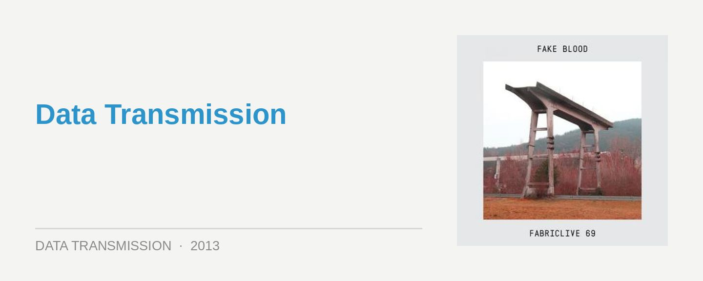

FabricLive 69: Fake Blood
Label: FabricScore: 8/10
The description of Theo Keating AKA Fake Blood as a “maverick” in the press notes for FabricLive 69 pretty much hits the nail on the head. Aligning himself with the noisy fidget crowd with his 2008 dancefloor destroyer Mars, there was always a little more intelligence and precision to the cheap thrills he was dealing in; reflecting the long background in club music that was already behind him.
Keating had already achieved success over the years in acts like Wiseguys and Touché, funk and breakbeat outfits who came in at a slightly funkier tempo. The Fake Blood alias was an enigmatic rebirth that represented his bid to the next generation of ravers, though it was a move that he pulled off in consummate style.
What’s most interesting is that in snobbier dance circles, the Fake Blood noise manifesto was once considered one of the sillier, kiddy-friendly sides of dance culture. There’s nothing like an American EDM revolution to put things in perspective though. Several years later, in the wake of the excesses of brostep and trouse, the hidden subtleties of his bombastic sound are a lot more apparent. And it’s showcased in all of its over-the-top glory on FabricLive 69.
There’s a sense of “anything goes” to the motley crew of 30 tracks that are collected here. Working from a tough electro framework, you’ll hear dashes of hip hop, house, dancehall, old-school rave and many, many more hurled violently (yet shrewdly and judiciously) into the mix.
There’s a handful of Fake Blood productions, plus contributions from usual suspects like Brodinski, Boy 8-Bit and French Fries, though he’s clever enough to throw in a few ancient classics from the likes of Nightmare Wax, which are so cleverly placed you won’t bat an eyelid. Occasionally, the tunes are just so artfully executed, you’ll be left gaping; witness Mesa & King’s shift from hypnotic tech house into high-pitched hysteria on Swerve Ball.
Keating starts the mix on a pumping note, bombarding the listener with a cavalcade of high-pitched synth lines and shrieking 303s. It’s an approach of constant intensity, which he achieves by shifting constantly through different sounds, eventually moving into some particularly wacky, percussive techno in the second half of the mix. With each track playing out for barely more than a minute, things move at a breakneck pace, though Keating’s precision in the both programming and mixing department is good enough to qualify as ‘seamless’.
Whether or not you’re a fan of the brasher side of club electro, Fake Blood’s kingpin status simply can’t be denied. And he’s in fine form on FabricLive 69. Highly recommended for those who like their club music raw and noisy; and too, for just about anyone else with a passing curiosity in a little bit of Fake Blood excess.